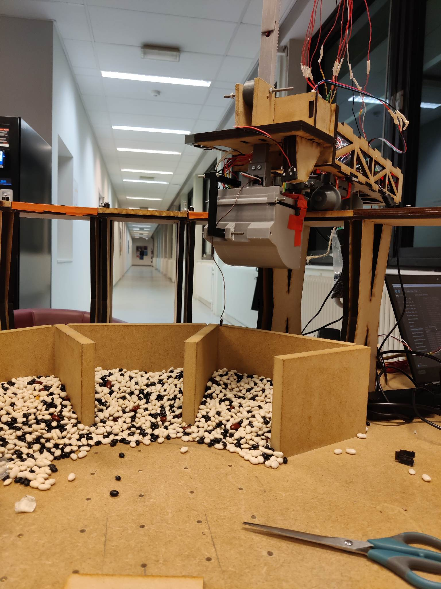
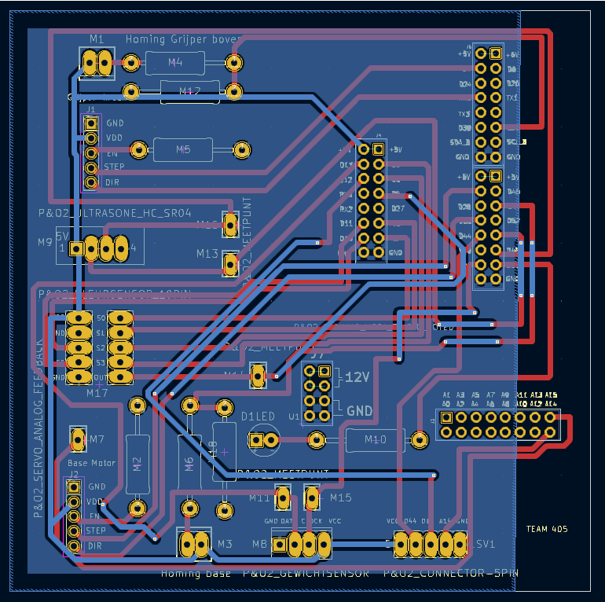
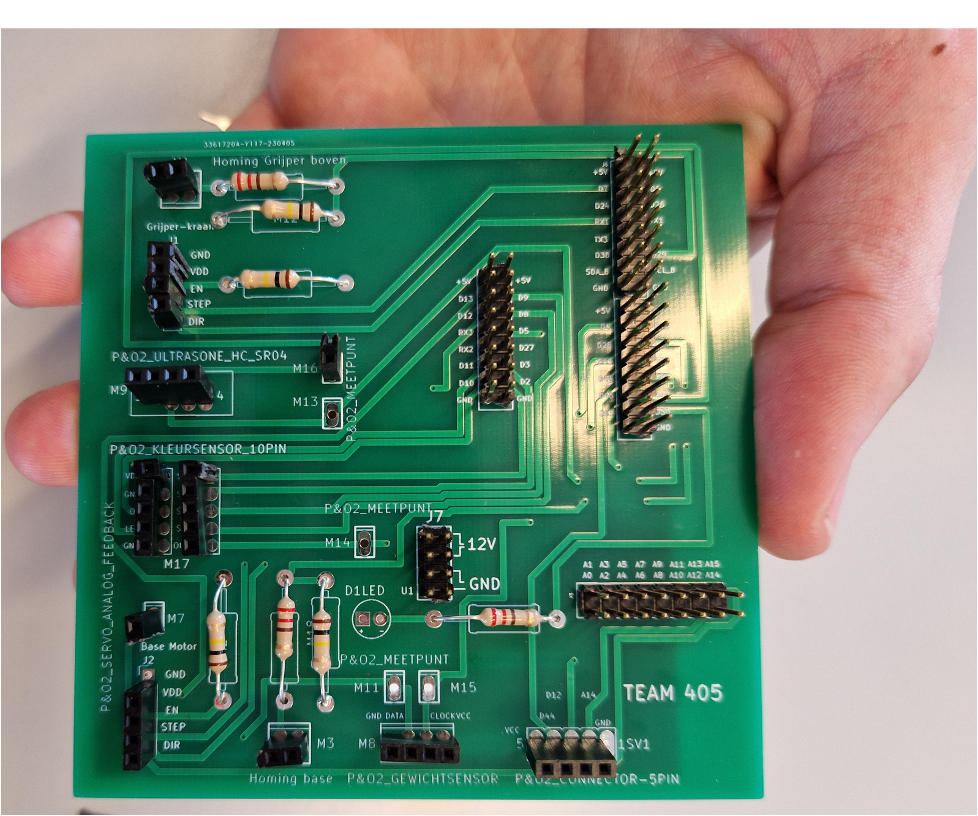
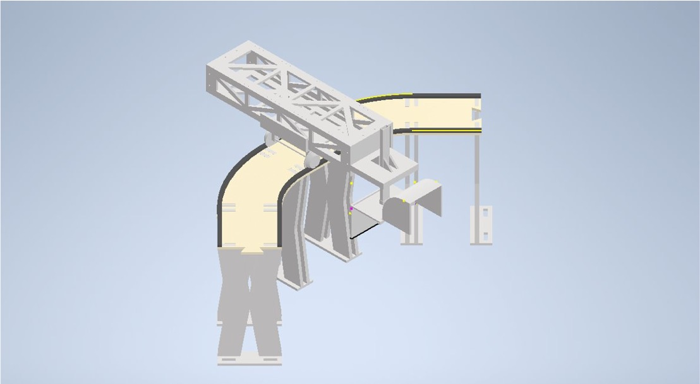

The BeanBot

On Saturday 12/20/2025, there will be a 3D model available for viewing.
Problem
Developed an electromechanical robotic system that interfaces with a user application to dispense user-specified quantities of up to three different bean types. The system interprets user input, identifies each bean container via color sensing, measures the requested weight with an integrated load cell, and sequentially dispenses each selection.
Approach
A rail-mounted, 3D-printed robotic carriage was designed to autonomously retrieve and deliver beans. Synchronized stepper motors provide precise linear motion, while a DC motor and servo actuate the vertical arm and gripper, respectively. A color sensor embedded in the gripper enables container identification. System control and power management are implemented on a custom PCB integrating an Arduino, motor drivers, and sensors.


